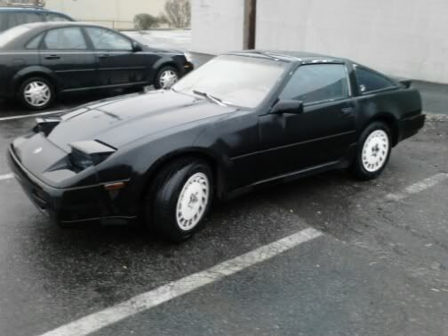

-
Yup, I've seen that thread. Still say just use the proper filter from a decent brand, like Bosch or K&N. They have anti-drain back valves.Augustus Maximus wrote: http://forums.maxima.org/3rd-generation-maxima-1989-1994/217766-ve30de-oil-filter-alternative-since-15208-60u00-has-been-discontinued.html
We got a whole thread dedicated to the filter alternative for it. Both engines use the same filter but for some reason the VTC sounds like a sewing machine at start up with the certain brands.
That's me DD man…fully restored and running like a naked virgin :twisted: . I recently added true CAI and copper tank radiator.- VG30DET (HE341) 86 300ZX - 1982 280ZX Turbo - Headered NA 1986 300ZX 2+2 - 2000 Xterra - -
I wont lie, I've looked longingly into the engine bay of many a maxima thinking things like "coil over plug, dohc, sequential injection, better technology everything, lower miles…" etc.
If the rwd transmission bolts up, and the motor mount locations match, what is the major mechanical difficulty to over come? I could do the rewire job in my sleep at this point.
Someone say something that sounds really hard so I wont start saving money to do this. Is the starter a dead match? No drilling or craziness like with swapping to a Z32 trans?
I don't care about the cross over pipe. If VG manifolds bolt up, that means my set of pathfinder manifolds will too. I actually sold a headlight to a guy with the VE in his Z32. I find the swap
questionable in that car, but more reasonable here, for someone with permanent N/A aspirations.
88 N/A GL
https://sites.google.com/site/distortionfile/
My Comedy Website. Who knows, you might laugh. -
I swapped my rusted out 92SE into a 90SE so that was putting a VE into a VG shell. I swapped EFI and engine compartment harness, rewired the fuel pump for the more intelligent on and off the VE uses, cut and splice a few things here and there for turn signals and horn and it's been perfect. The top end of the VE is unique…it develops more power the faster it goes. And it uses the same injectors the 4th gen uses.Cha iro
enjoy building it yourself.
if it fails, fuck it.
at least you gave it a whirl. -
If you use the Z31 trans, then the Z31 starter will bolt up.Distortionfile wrote: If the rwd transmission bolts up, and the motor mount locations match, what is the major mechanical difficulty to over come? I could do the rewire job in my sleep at this point.
You have to figure out a new upper intake manifold and coolant pipe routing.
Distortionfile wrote: Is the starter a dead match? No drilling or craziness like with swapping to a Z32 trans?
I don't care about the cross over pipe. If VG manifolds bolt up, that means my set of pathfinder manifolds will too.
If you use the Z31 turbo manifolds, you will need to fab up a cross-over tube to work and head angles and distances are different. This is assuming you have worked out the upper intake and coolant issues. You could use Z32TT manifolds if want twins.
1986 300ZX Turbo…sold
1990 Skyline GT-R…new money pit
2014 Juke Nismo RS 6-speed…daily -
[quote]NissanEgg wrote:So which is it? Do Z31 manifolds work, or Z32 manifolds? Yes, the flange bolt pattern is the same but oval port vs round port…Originally posted by Distortionfile- VG30DET (HE341) 86 300ZX - 1982 280ZX Turbo - Headered NA 1986 300ZX 2+2 - 2000 Xterra - -
Personally I'd fab the UIM.Cha iro
enjoy building it yourself.
if it fails, fuck it.
at least you gave it a whirl. -
Sounds like more trouble than it's worth in the long run.
Besides, my friend just got Forza 2 and I built a 240z (fairllady) with 580 h.p., and about the time I took it out for a test run
my desires to remain N/A stayed back on the starting line with the rest of the pack
88 N/A GL
https://sites.google.com/site/distortionfile/
My Comedy Website. Who knows, you might laugh.

Copyright © 2006–. All rights reserved. Privacy Policy